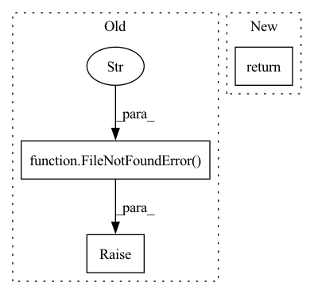

Pattern ID :24173
Before Change
def load_model(ckpt_dir: pathlib.Path, tags: Optional[List[str]] = None) -> AutoTrackable:
saved_model_paths = list(ckpt_dir.glob("**/saved_model.pb"))
if not saved_model_paths:
raise FileNotFoundError(
f"Checkpoint directory {ckpt_dir} does not contain a nested saved_model.pb"
)
elif len(saved_model_paths) > 1:
raise AssertionError(
f"Checkpoint directory {ckpt_dir} contains multiple \
nested saved_model.pb files {saved_model_paths}"After Change
ckpt_dir, h5_paths
)
)
return tf.keras.models.load_model(h5_paths[0])
In pattern: SUPERPATTERN
Frequency: 3
Non-data size: 3
Instances Fragment ID: 74979016
Project Name: determined-ai/determined
Commit Name: f3636ebb5e34502720015b7e82d945bed568ca20
Time: 2020-04-27
Author: sidney@determined.ai
File Name: common/determined_common/experimental/checkpoint/_tf.py
M Class Name: AnonimousClass
N Class Name: AnonimousClass
M Method Name: load_model(2)
N Method Name: load_model(2)
M Parent Class:
N Parent Class:
M File Name: common/determined_common/experimental/checkpoint/_tf.py
N File Name: common/determined_common/experimental/checkpoint/_tf.py
M Start Line: 9
M End Line: 25
N Start Line: 9
N End Line: 45
Before Change
raise TypeError("unsupported object type for argument "file"")
if isinstance(file, str) and not os.path.isfile(file):
raise FileNotFoundError(f"unable to access {file}" )
// Rasterise pages to PIL images with pypdfium2 and convert to numpy ndarrays
return [np.asarray(img) for img, _ in pdfium.render_pdf_topil(file, scale=scale, **kwargs)]
After Change
pages = [np.asarray(img) for img in pdf.render_topil(scale=scale, **kwargs)]
pdf.close()
return pages
Fragment ID: 74979017
Project Name: mindee/doctr
Commit Name: 4caeee3d724cd5004dd1996ee5750b01582ad9fc
Time: 2022-06-09
Author: geisserml@gmail.com
File Name: doctr/io/pdf.py
M Class Name: AnonimousClass
N Class Name: AnonimousClass
M Method Name: read_pdf(3)
N Method Name: read_pdf(2)
M Parent Class:
N Parent Class:
M File Name: doctr/io/pdf.py
N File Name: doctr/io/pdf.py
M Start Line: 34
M End Line: 42
N Start Line: 20
N End Line: 48
Before Change
try:
latest_wheel = max(wheel_dir.glob("sky-*.whl"), key=os.path.getctime)
except ValueError:
raise FileNotFoundError("Could not find built Sky wheels.") from None
cleanup_wheels_dir(wheel_dir, latest_wheel)
return wheel_dir.absolute()
After Change
temp_wheel_dir = pathlib.Path(tempfile.mkdtemp())
shutil.copy(_get_latest_built_wheel(), temp_wheel_dir)
return temp_wheel_dir.absolute()
Fragment ID: 74979015
Project Name: skypilot-org/skypilot
Commit Name: 0a608d00efa0185e4df609396072acb18083db19
Time: 2022-04-29
Author: suquark@gmail.com
File Name: sky/backends/wheel_utils.py
M Class Name: AnonimousClass
N Class Name: AnonimousClass
M Method Name: build_sky_wheel(0)
N Method Name: build_sky_wheel(0)
M Parent Class:
N Parent Class:
M File Name: sky/backends/wheel_utils.py
N File Name: sky/backends/wheel_utils.py
M Start Line: 39
M End Line: 73
N Start Line: 94
N End Line: 112